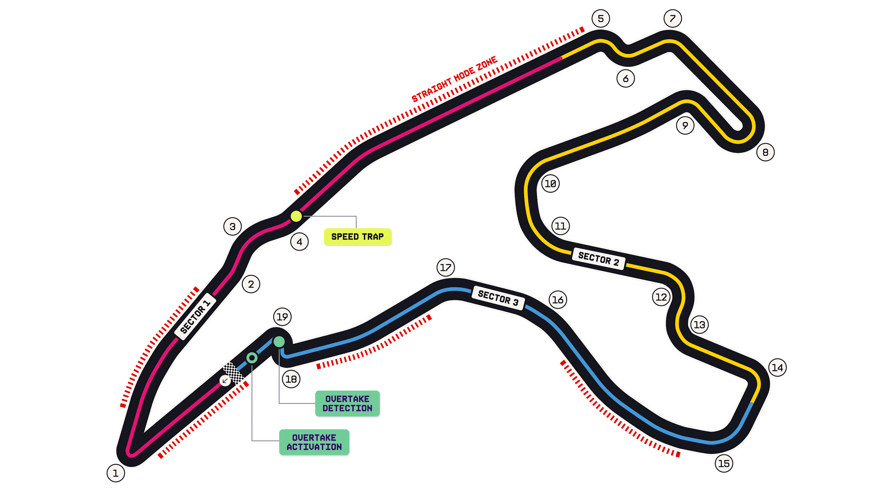

7.004 km · 19 turns
Spa-Francorchamps Circuit Guide
The longest lap on the calendar — a proper old-school power-and-commitment track through the Ardennes forest.
Circuit map

The signature sequence
- Eau Rouge / Raidillon (T2–T4) — flat-out uphill compression, one of the great corners in the sport.
- Leads straight onto the Kemmel Straight, the prime overtaking spot.
- Straight Mode (2026's low-drag mode) makes the Kemmel run even more of a slipstream battle.
Sectors
- S1 — start-finish, La Source hairpin, Eau Rouge and the Kemmel blast.
- S2 — the fast, flowing middle sector (Les Combes to Pouhon to Stavelot).
- S3 — the run home through the quicker stuff to the Bus Stop chicane.
Overtaking & straight mode
- Overtake Detection near the final chicane; Activation onto the pit straight.
- Two designated Straight Mode Zones (pit straight + Kemmel).
- The speed trap sits on the Kemmel — huge top-speed deltas in the tow.
Weather wildcard: Spa's 7 km lap crosses its own micro-climates — it can be
bone dry at the pits and pouring at Stavelot. Always keep a radar on air here.
Key numbers
- Circuit length: 7.004 km (longest on the calendar).
- Race distance: 308.054 km over 44 laps.
- First World Championship GP: 1950.
- Lap record: 1:44.701 — Sergio Perez (2024).
Commentary hooks
- Eau Rouge is flat in a modern F1 car — the drama is the commitment and the compression, not lift-off.
- Track position matters less than at Hungary: long lap + Kemmel = real overtaking.
- Tyre warm-up through the fast sector is a recurring talking point in cool Ardennes air.
Circuit facts: Formula1.com.